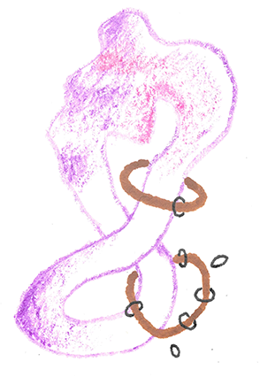
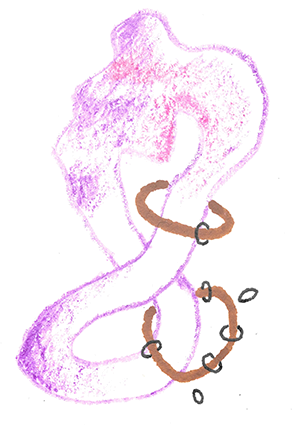
Dear fellow club of rome members,
My name is Leon Santen (they/he). To put labels on myself, I like to use the term radical engineer, artist, community-designer, and complex systems thinker, in the sense that I try to challenge the extractivist and colonial structures of our systems, uproot them, and replace them with community-oriented, regenerative alternatives. While I started out as a traditional renewable energy engineer, in the last four years, I have grown into becoming a very intentional writer and illustrator, focusing on communication and system-aware interventions in all my work.
I am writing to you with an awareness that my background as a white German having attended a university program in the US might seem rather privileged. My journey has been one of running away from the established & rigid German engineering system, trying to bring the liberal sciences and decolonial sentiment into engineering wherever possible. This puts me into a weird position, finding very few value-aligned job positions, and even though your position is centered around supporting underrepresented groups, I still feel drawn to apply because this work is what is closest to my heart.I can feel that my path ahead will include interconnecting sustainability change-makers, systems-thinking illustration work, and writing. Obviously, it makes sense to give this wonderful fellowship opportunity to BIPOC folks. However, I would be so grateful if you could connect me with any opportunities you are familiar with so I can continue my work with value-aligned organizations! I'd love to hear from you via email.
Your fellowship has spoken more to me than any job opening because the work I have been pursuing during my capstone project for my master’s program (“Engineering, Sustainability, and Health”) is in some way the personal extension of the efforts of the Club of Rome.
During this 2-year program I embarked on a critical thinking journey in the fields of food-, water-, energy-, and waste systems as well as just transition frameworks. I wrote dozens of blog posts and created many illustrations of which some are attached below. I am so excited to send this application to you because my recent thesis work has pushed me to grow into becoming a communication specialist. In this 2-year spanning project, I took on a complex systems lens to develop animation & interface solutions for trans-disciplinary, cross-national collaboration for a sustainable future. I developed a digital communication tool and interviewed dozens of people for this ethnographic design study ranging from master’s friends in Kenya building circular economy systems to collaboration experts, friends, and mentors. The whole point of my capstone project was to learn how to become an organizer within the trans-disciplinary world of sustainability professionals by enabling systemic sensing, humanizing communication, vision-building, and trans-disciplinary collaboration.
As my example blog-post (sample writing piece), I chose this slightly spicy piece I wrote about building just energy systems.
Below I share with you a variety of illustrations that might be of interest you!
Thank you for taking the time to perceive my words and creations.
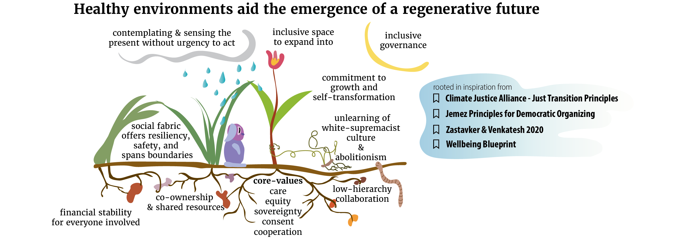
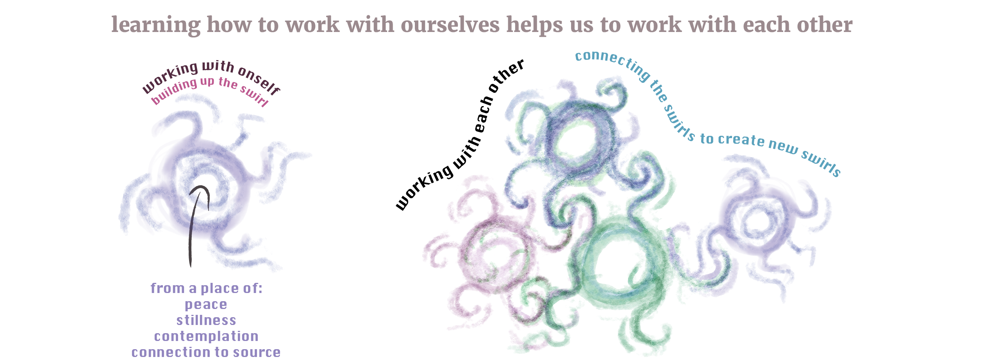
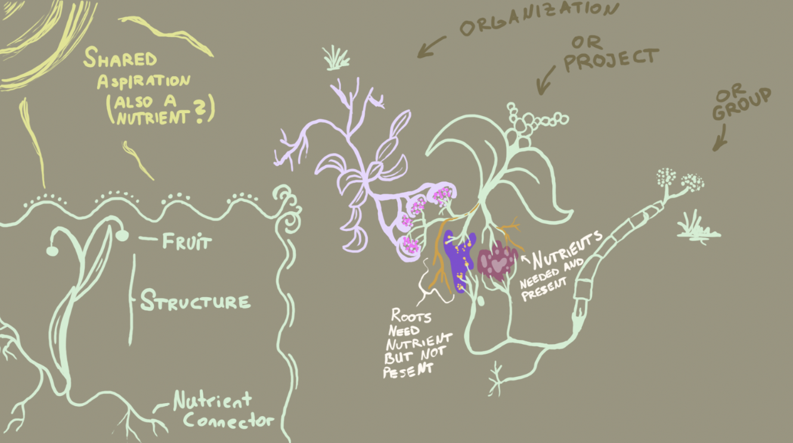

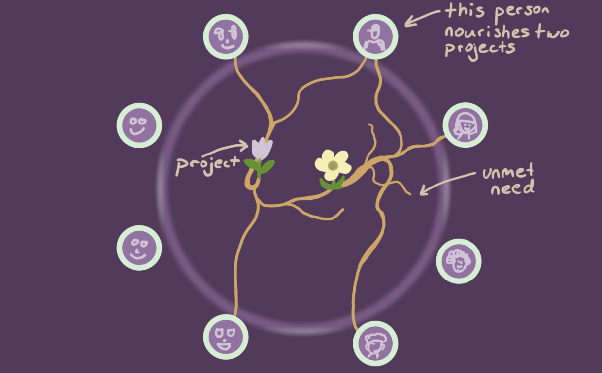
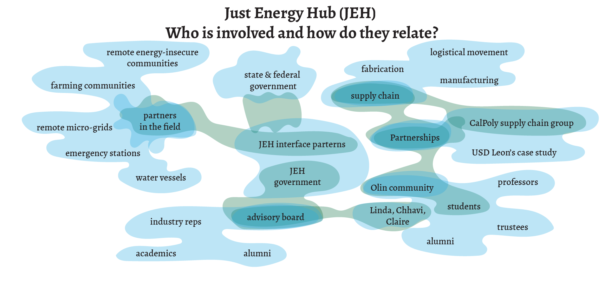
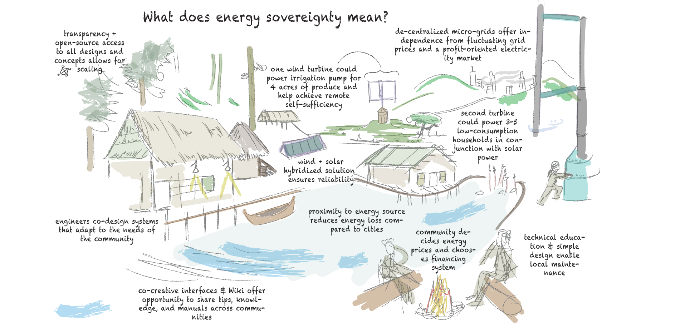
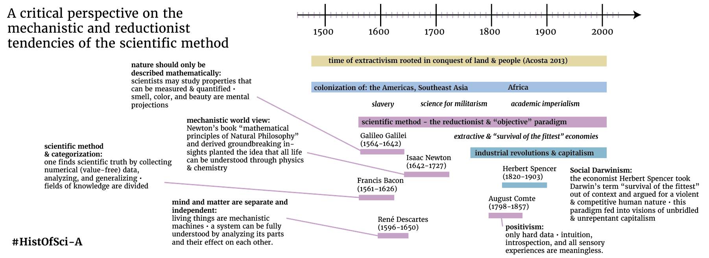
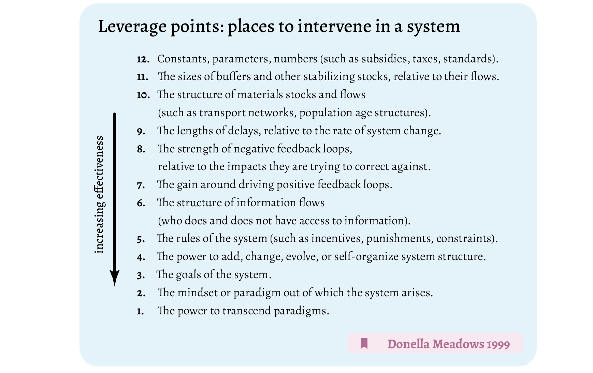
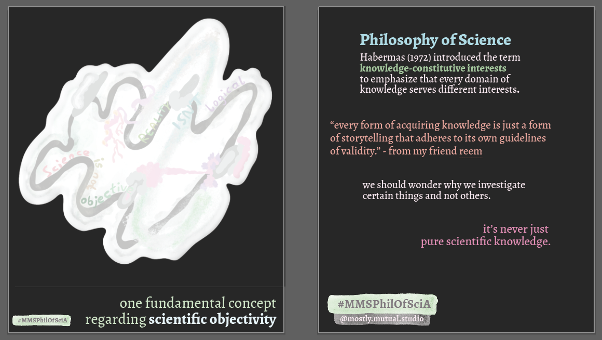
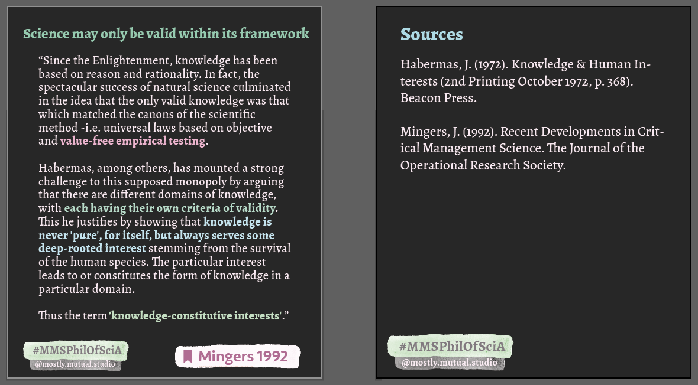